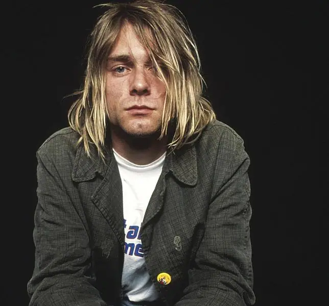

Kurt Cobain
Cantante de Nirvana
Kurt Cobain músico y compositor estadounidense, conocido por haber sido el vocalista, guitarrista y principal compositor. Es considerado como icono y voz de la generación X.